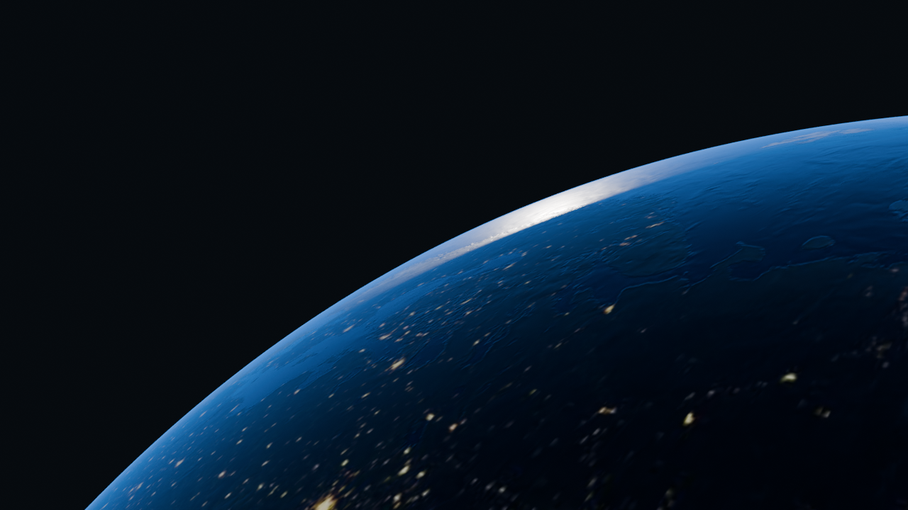

Moto 자산 · 북반구 / 남반구 경로
실제 공개 텍스처와 승인된 VDB를 사용하는 독립 Blender 렌더입니다. 완성 도입부·웹 구현·목업 충실도 승인 자료가 아닙니다. 확대 지표는 4K 그대로여서 뭉개짐이 남습니다. 구름의 밀도/지역 크기/하늘 fill도 추가 보정 대상입니다.
같은 재질·광원에서 텍스처 비교
1. 원형 지구
north · 목표 64.1°, 12.4° · 방사 고도 19113.0 kmsouth · 목표 -38.0°, -71.0° · 방사 고도 19113.0 km2. 회전 접근
3. 높은 궤도

north · 목표 64.1°, 12.4° · 방사 고도 1592.8 kmsouth · 목표 -38.0°, -71.0° · 방사 고도 1592.8 km4. 낮은 궤도
5. 구름 입구
판정
원형 지구 외관: 북반구 우선 TUNE. 확대 경로: 두 안 모두 지역 지표 자료가 필요. 구름: 기존 모양 KEEP을 유지하며 지역 배치/빛은 TUNE. 반구 최종 확정과 사용자 제작 피드백2는 아직 진행하지 않았습니다.